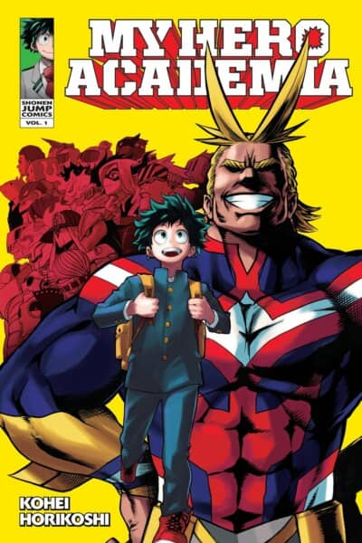

Sobre o anime
Boku no Hero Academia" é um anime que se passa em um mundo onde quase toda a população possui superpoderes, conhecidos como "quirks". A história segue Izuku Midoriya, um jovem que nasceu sem um quirk, mas ainda sonha em se tornar um herói. Após um encontro com o herói número um, All Might, Midoriya ganha um poder especial e ingressa na Academia U.A., uma escola para aspirantes a heróis. O anime explora sua jornada para se tornar um grande herói, enquanto enfrenta desafios e vilões